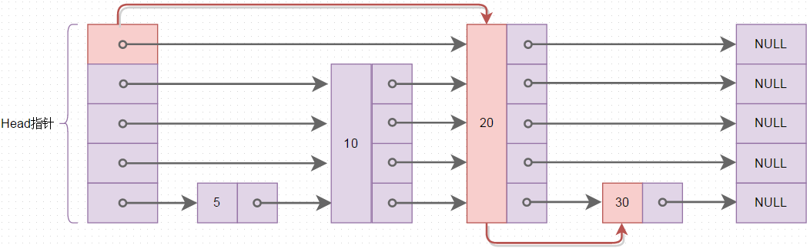
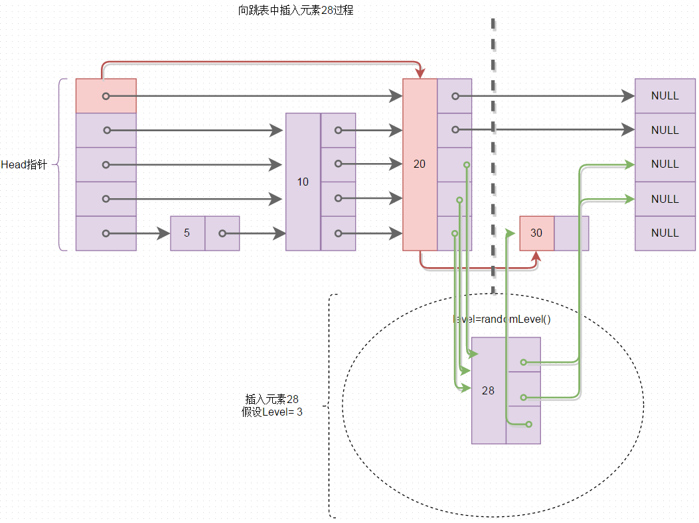
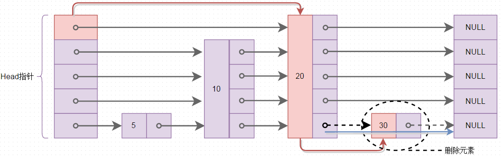

skiplist 跳表
1 介绍
跳表（skiplist）是一个非常优秀的数据结构，实现简单，插入、删除、查找的复杂度均为 O(logN)。LevelDB 的核心数据结构是用跳表实现的，redis 的 sorted set 数据结构也是有跳表实现的。
所有操作均从上向下逐层查找，越上层一次 next 操作跨度越大。其实现是典型的空间换时间。
跳表第 0 层是相当于一个双向链表，包含了所有的元素
1.1 查找
下图就是一个跳表结构，红色箭头为查找 30 的过程：20 ==>30

1.2 插入
下图是插入示意图，红色箭头表示查找插入位置的过程，绿色箭头表示指针的移动
插入过程：从上而下逐层遍历，记录各层的插入位置到 update；然后随机获取新节点的 level。如果新节点 level 大于当前跳表最大 level，取新节点 level，并记录新层的插入位置；最后根据 level 和 update 执行插入逻辑。
另外，插入过程是自动有序的，最后得到的是一组有序元素

1.3 删除
下图是删除操作图，删除节点要注意的是：删除节点之后，可能需要降层：因为当前跳表最高层的节点数量可能变成 0 了

跳表所有数据都只有一份拷贝，各层级间看似有重复数据，但其不过是指针指向的变动罢了
2 main.c
#include <stdio.h> #include <stdlib.h> #include "skiplist.h" int main() { srand((unsigned)time(0)); int count = 20, i; printf("=== Init Skip List ===\n"); skiplist *sl = slCreate(); for( i = 0; i < count; i++) slInsert(sl,i); printf("=== Print Skip List ===\n"); slPrint(sl); printf("=== Search Skip List ===\n"); for(i = 0; i < count; i++) { int value = rand()%(count+10); slSearch(sl, value); } printf("=== Delete Skip List ===\n"); for(i = 0; i < count+10; i+=2) printf("Delete[%d]: %s\n", i, slDelete(sl, i)?"SUCCESS":"NOT FOUND"); slPrint(sl); slFree(sl); sl = NULL; }
3 skiplist.h
#ifndef __SKIPLIST_H #define __SKIPLIST_H #define SKIPLIST_MAXLEVEL 8 #define SKIPLIST_TWO_LEVEL_TIMES 0.5 // 理论上，相邻两层 level 之间的节点数量倍数关系 typedef struct skiplistNode { double score; struct skiplistNode *backward; // 当前节点在第 0 层上的上一个节点 struct skiplistLevel { struct skiplistNode *forward; // 用来存储该节点的各个 level 上的下一个节点 }level[]; }skiplistNode; typedef struct skiplist { struct skiplistNode *header, *tail; unsigned long length; // 节点数量 int level; // 跳表当前的最大层数，1 <= level <= SKIPLIST_MAXLEVEL }skiplist; skiplistNode *slCreateNode(int level, double score); skiplist *slCreate(void); void slFreeNode(skiplistNode *sn); void slFree(skiplist *sl); int slRandomLevel(void); skiplistNode *slInsert(skiplist *sl, double score); void slDeleteNode(skiplist *sl, skiplistNode *x, skiplistNode **update); int slDelete(skiplist *sl, double score); int slSearch(skiplist *sl, double score); void slPrint(skiplist *sl); #endif
4 skiplist.c
#include "skiplist.h" #include <stdlib.h> #include <stdio.h> skiplistNode *slCreateNode(int level, double score) { skiplistNode * sn = malloc(sizeof(*sn) + level*sizeof(struct skiplistLevel)); sn->score = score; return sn; } /* 创建一个跳表， 返回 skiplist 指针 */ skiplist *slCreate(void) { int j; skiplist *sl; sl = malloc(sizeof(*sl)); sl->level = 1; sl->length = 0; sl->header = slCreateNode(SKIPLIST_MAXLEVEL, 0); // 跳表的头节点包含所有 level for(j = 0; j < SKIPLIST_MAXLEVEL; j++) { sl->header->level[j].forward = NULL; } sl->header->backward = NULL; sl->tail = NULL; return sl; } void slFreeNode(skiplistNode *sn) { free(sn); } void slFree(skiplist *sl) { skiplistNode *node = sl->header->level[0].forward, *next; free(sl->header); while(node) { next = node->level[0].forward; slFreeNode(node); node = next; } free(sl); } /* 随机得到一个 level，该 level 表示把某一节点划分到该层 level */ int slRandomLevel(void) { int level = 1; while((rand()&0xFFFF) < (SKIPLIST_TWO_LEVEL_TIMES * 0xFFFF)) level += 1; return (level < SKIPLIST_MAXLEVEL) ? level : SKIPLIST_MAXLEVEL; } /* 插入新节点 * @para2: 新节点的值 * @retur: 新节点 * 新节点的数据保存一份，并没有在多个 level 中插入同一节点的数据 * 只是修改了指针，逻辑上插入罢了 * */ skiplistNode *slInsert(skiplist *sl, double score) { skiplistNode *update[SKIPLIST_MAXLEVEL]; // 保存新节点在各层应插入的位置 skiplistNode *node; node = sl->header; int i, level; // 从跳表的当前最高层开始遍历各层节点，找到新节点在各层的插入位置 for (i = sl->level-1; i >= 0; i--) { while(node->level[i].forward && node->level[i].forward->score < score) // 在第 i 层 level 寻找插入位置 node = node->level[i].forward; update[i] = node; // 记录新节点在第 i 层应插入的位置 node，在 node 节点右边插入 } // 获取新节点的 level level = slRandomLevel(); // 如果新节点的层数 > 当前最大层数，需要遍历新添加的层，确定节点在新层的插入位置 if (level > sl->level) { for (i = sl->level; i< level ;i++) update[i] = sl->header; sl->level = level; } node = slCreateNode(level, score); // 把新节点插入各层（逻辑上插入） for (i = 0; i < level; i++) { node->level[i].forward = update[i]->level[i].forward; update[i]->level[i].forward = node; } node->backward = (update[0] == sl->header? NULL : update[0]); if (node->level[0].forward) node->level[0].forward->backward = node; else sl->tail = node; sl->length++; return node; } void slDeleteNode(skiplist *sl, skiplistNode *x, skiplistNode **update) { int i; // 执行逻辑删除操作 for (i = 0; i < sl->level; i++) { if (update[i]->level[i].forward == x) update[i]->level[i].forward = x->level[i].forward; } if(x->level[0].forward) x->level[0].forward->backward = x->backward; else // 如果x是第 0 层最后一个节点，修改 tail sl->tail = x->backward; // 如果最高层没有元素了，就降层 while(sl->level > 1 && sl->header->level[sl->level-1].forward == NULL) sl->level--; sl->length--; } int slDelete(skiplist *sl, double score) { skiplistNode *update[SKIPLIST_MAXLEVEL], *node; int i; node = sl->header; // 遍历各层，记录需要删除的节点的上一个节点的位置 for(i = sl->level-1; i >= 0; i--) { while(node->level[i].forward && node->level[i].forward->score < score) node = node->level[i].forward; update[i] = node; } node = node->level[0].forward; if(node && score == node->score) { slDeleteNode(sl, node, update); slFreeNode(node); return 1; } else return 0; return 0; } int slSearch(skiplist *sl, double score) { skiplistNode *node; int i; node = sl->header; // for 循环结束之后，要找的节点只可能在下一个节点位置，若还是没找到，就不存在 for (i = sl->level-1; i >= 0 ;i--) { while(node->level[i].forward && node->level[i].forward->score < score) node = node->level[i].forward; } node = node->level[0].forward; if (node && score == node->score) { printf("Found %d\n",(int)node->score); return 1; } else { printf("Not found %d\n", (int)score); return 0; } } void slPrint(skiplist *sl) { skiplistNode *node; int i; for (i = 0; i < SKIPLIST_MAXLEVEL; i++) { printf("LEVEL[%d]: ", i); node = sl->header->level[i].forward; while(node) { printf("%d -> ", (int)(node->score)); node = node->level[i].forward; } printf("NULL\n"); } }
5 结果
$ gcc main.c skiplist.c -o main $ ./main === Init Skip List === === Print Skip List === LEVEL[0]: 0 -> 1 -> 2 -> 3 -> 4 -> 5 -> 6 -> 7 -> 8 -> 9 -> 10 -> 11 -> 12 -> 13 -> 14 -> 15 -> 16 -> 17 -> 18 -> 19 -> NULL LEVEL[1]: 0 -> 2 -> 7 -> 10 -> 11 -> 12 -> 13 -> 15 -> 17 -> 18 -> NULL LEVEL[2]: 2 -> 18 -> NULL LEVEL[3]: 2 -> 18 -> NULL LEVEL[4]: 2 -> 18 -> NULL LEVEL[5]: 2 -> NULL LEVEL[6]: 2 -> NULL LEVEL[7]: 2 -> NULL === Search Skip List === Found 1 Found 14 Found 15 Not found 22 Found 9 Not found 21 Found 9 Found 8 Found 6 Found 13 Found 18 Found 14 Found 13 Found 6 Not found 20 Found 16 Found 13 Found 3 Found 10 Not found 27 === Delete Skip List === Delete[0]: SUCCESS Delete[2]: SUCCESS Delete[4]: SUCCESS Delete[6]: SUCCESS Delete[8]: SUCCESS Delete[10]: SUCCESS Delete[12]: SUCCESS Delete[14]: SUCCESS Delete[16]: SUCCESS Delete[18]: SUCCESS Delete[20]: NOT FOUND Delete[22]: NOT FOUND Delete[24]: NOT FOUND Delete[26]: NOT FOUND Delete[28]: NOT FOUND LEVEL[0]: 1 -> 3 -> 5 -> 7 -> 9 -> 11 -> 13 -> 15 -> 17 -> 19 -> NULL LEVEL[1]: 7 -> 11 -> 13 -> 15 -> 17 -> NULL LEVEL[2]: NULL LEVEL[3]: NULL LEVEL[4]: NULL LEVEL[5]: NULL LEVEL[6]: NULL LEVEL[7]: NULL